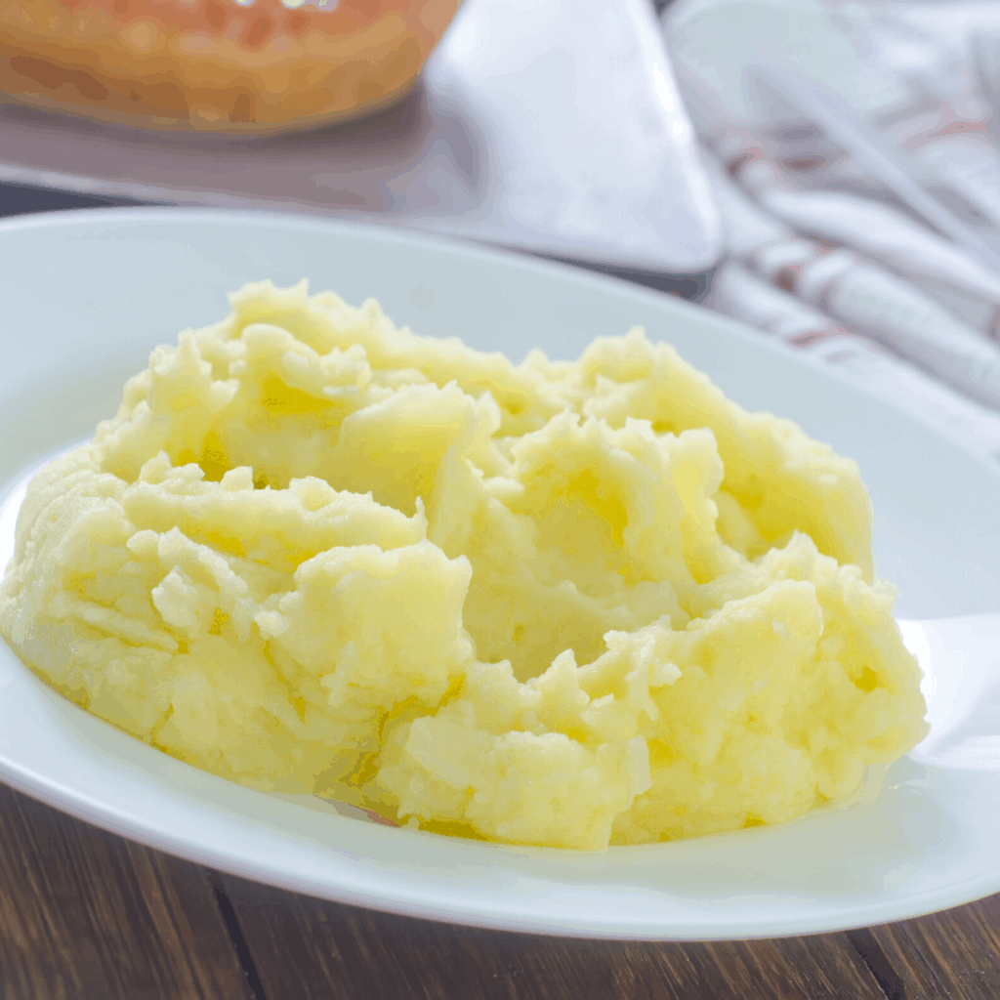

Mashed Potato

A classic Staple!
We all know and love this recipe!
The secret to good mashed potato are the potatoes you use, Desirees are best!
Ingredients
- 500 grams of potatoes
- 50 grams of butter
- 100 millilitres of milk
- Salt and Pepper to taste
Steps
- Steam or Boil potatoes until knife can penetrate with no resistance.
- Heat milk and butter.
- Mash potatoes using mashing device.
- Add milk, butter, salt and pepper to taste and mix.